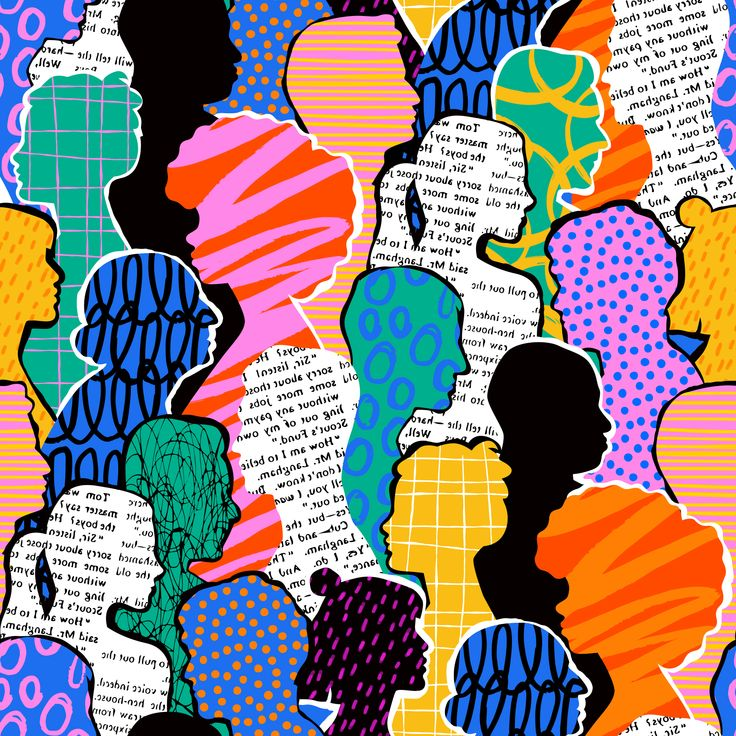

FILOSOFÍA
¿Pensamos realmente por nosotros mismos?
Una reflexión sobre cuánto influyen nuestro entorno y las opiniones de los demás en nuestra forma de pensar.
MENTES INQUIETAS · NUESTRO UNIVERSO
Un espacio para explorar pensamientos, cuestionar lo establecido y descubrir diferentes maneras de entender el mundo.
SELECCIÓN EDITORIAL
Tres ideas que invitan a detenerse, mirar desde otra perspectiva y pensar.
 01
01
FILOSOFÍA
Una reflexión sobre cuánto influyen nuestro entorno y las opiniones de los demás en nuestra forma de pensar.
SOCIEDAD
Sobre las relaciones humanas y la manera en que la tecnología transforma nuestra forma de comunicarnos.

03CULTURA
Una invitación a mirar con otros ojos aquello que siempre hemos dado por hecho.
RECIÉN PUBLICADAS
ENCUENTRA TU PRÓXIMA INQUIETUD
EXPLORA DIFERENTES MIRADAS